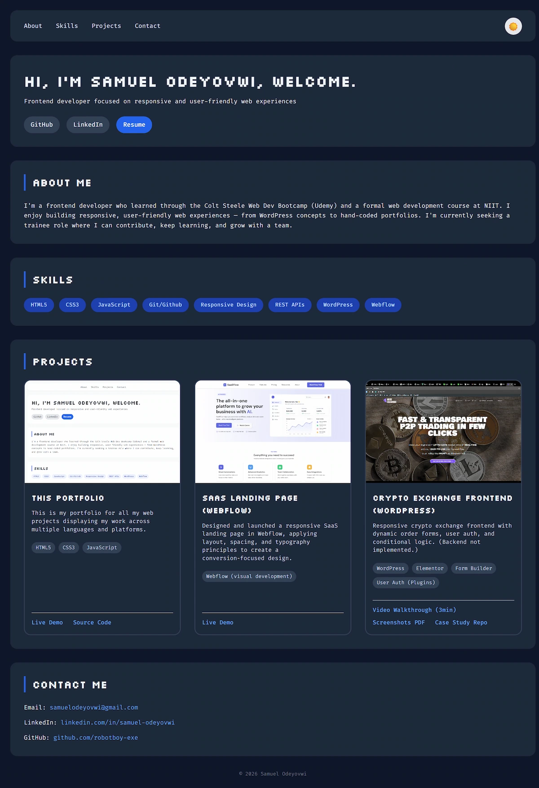

I am an analytical Web Developer with a background in Electrical and
Electronics Engineering. Moving seamlessly between hardware logic and
software architecture, I specialize in building data-driven web
applications and clean, highly responsive user interfaces. My training
spans the Colt Steele Web Dev Bootcamp (Udemy) and a comprehensive web
development diploma program from NIIT. I thrive on debugging complex
workflows, structural planning, and deploying reliable digital
solutions using modern developer workflows.
Skills
PHP
JavaScript (ES6+)
HTML/CSS3
SQL & Databases
Git/Github
AI-Assisted Dev
Responsive Design
System Design
WordPress
Webflow
Projects

Institutional Management & Learning Platform
A role-driven web app managing Admin, Student, and Prospect
workflows. Co-engineered the PHP authentication and admissions
pipeline using AI pair-programming, while refactoring inherited
code for full mobile responsiveness.
Designed and launched a responsive SaaS landing page in Webflow,
applying layout, spacing, and typography principles to create a
conversion‑focused design.